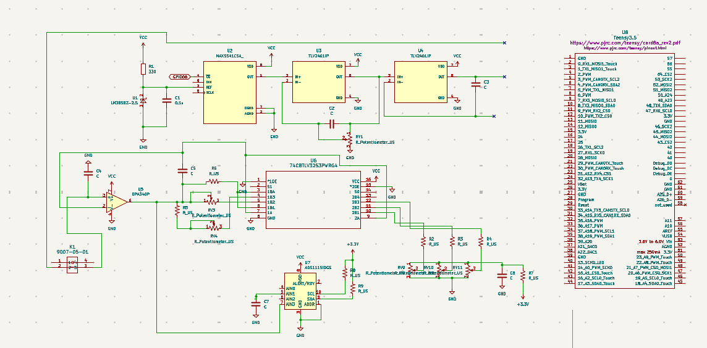
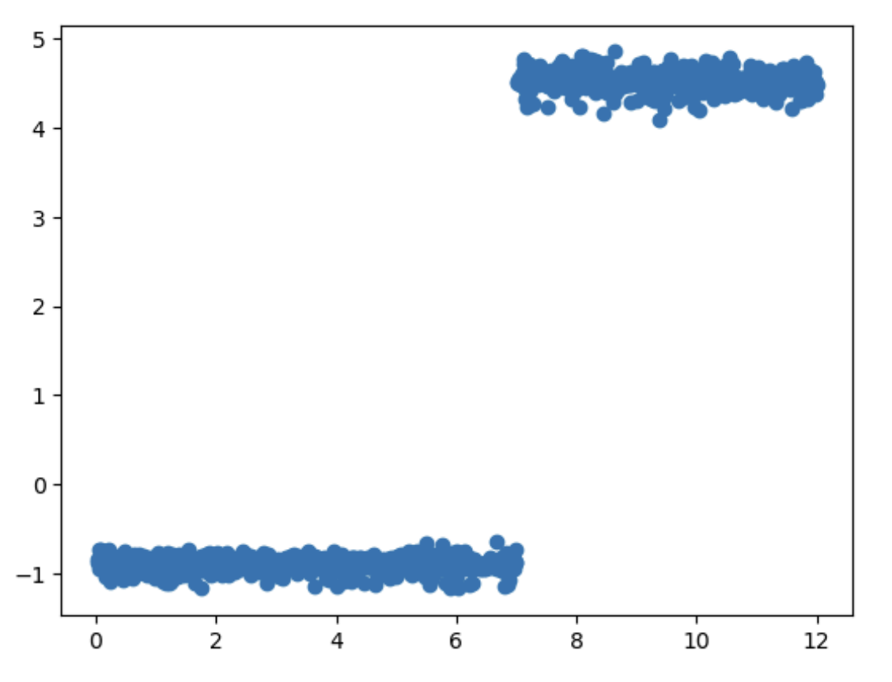

Potentiostat PCB Design


Overview
Our SensTech biosensor system centers on a custom potentiostat designed to continuously monitor Levodopa (L-DOPA) concentrations for Parkinson's patients through interstitial fluid. The device pairs an electrochemical sensing electrode with a compact, wireless reader, letting it run outside a lab setting while still delivering lab-grade electrochemical measurements. Signal readings are streamed in real time to a companion app, giving both patients and clinicians immediate insight into fluctuating drug levels rather than relying on periodic blood draws or symptom diaries. The core innovation is fusing a nanocomposite enzyme-based sensing layer with a low-power, portable potentiostat platform capable of running the same voltammetric techniques used in benchtop instruments.
More details
The potentiostat runs square wave voltammetry to identify the L-DOPA oxidation potential, then switches to chronoamperometry at that fixed potential to generate a concentration-dependent current signal from the three-electrode system (working, reference, counter). It's built around a Teensy 3.1 microcontroller with 12-bit voltage control and 16-bit current resolution, chosen to balance measurement precision with the compact form factor needed for wearability. To validate accuracy, we substitute a known resistor for the electrochemical cell and confirm the potentiostat's readings match Ohm's Law predictions across the applied potential range. The raw current signal is then denoised with a Savitzky-Golay filter and converted to L-DOPA concentration via the Cottrell relation and a linear calibration curve, with results sent wirelessly to the patient/clinician app via a bluetooth module.
As baseline validation, we tested the potentiostat on a breadboard prototype and substituted a known resistor for the electrochemical cell to confirm that the chronoamperometric (CA) output matched the expected Ohm's Law response across applied potentials. This confirmed the hardware and signal-processing pipeline were functioning correctly before introducing the full electrode stack. Further testing with the complete sensor system is ongoing.
← Back to projects